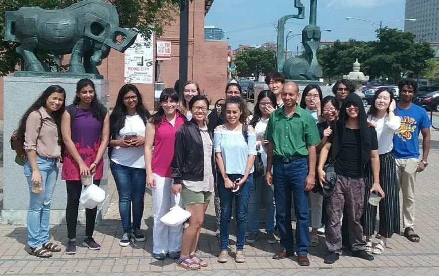
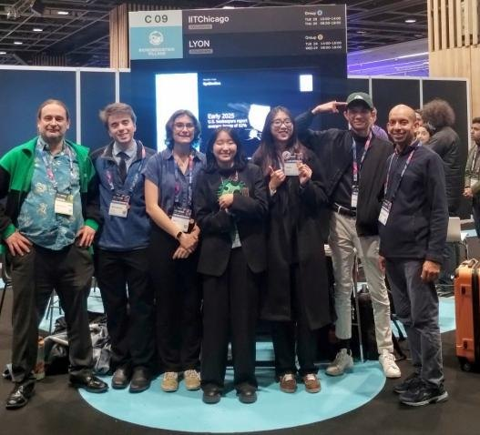

People
Students and staff working across engineering, biology and computation.

Abhinav Bhushan
Associate Professor, Biomedical Engineering
I am an engineer who works on biological questions. My lab builds microfluidic devices and biosensors because the questions we care about — how gut microbes change the way a drug behaves, how tissue and bacteria shape each other over days — cannot be answered in a dish or by an endpoint assay. They need an environment you can control and a measurement you can keep taking.
I came to this from mechanical engineering. I earned my PhD at Louisiana State University and trained as a postdoc at the University of California, Davis and at Massachusetts General Hospital, Harvard Medical School and Shriners Boston. As an NIH K30 scholar at UC Davis I took a second MS in advanced clinical research, which shaped how I think about what these models have to predict before anyone should trust them.
My work has been recognized with the NIH K99/R00, an NSF CAREER Award and the CMBE Young Innovator Award.
The lab spans microfabrication in both polymer and metal, cell and molecular biology, and computation. Through the NSF I-Corps program I worked on whether one of our technologies had a market, which changed how I think about translation. In 2026 I spent time at KTH Royal Institute of Technology and Stockholm University as a Digital Futures Scholar-in-Residence.
I teach biofluid mechanics, medical devices and synthetic biology. I care a great deal about student success and about building unusual learning opportunities — I helped start the first Sustainability Hackathon at Harvard — and about finding good ways of communicating science to people outside the field.

Want to work with us?
We welcome students and postdocs who want to work where engineering, biology and computation meet.